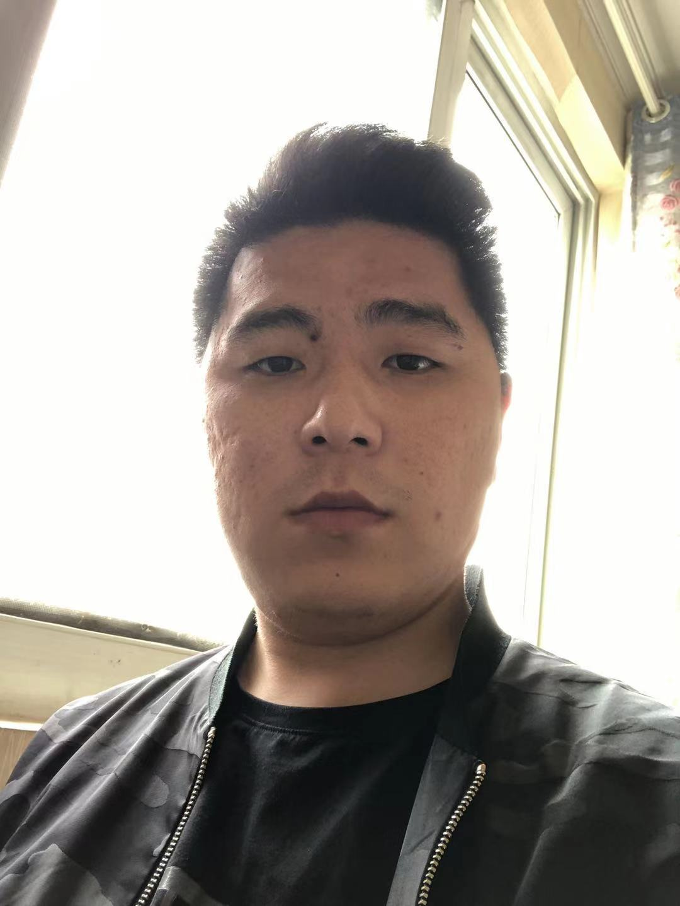
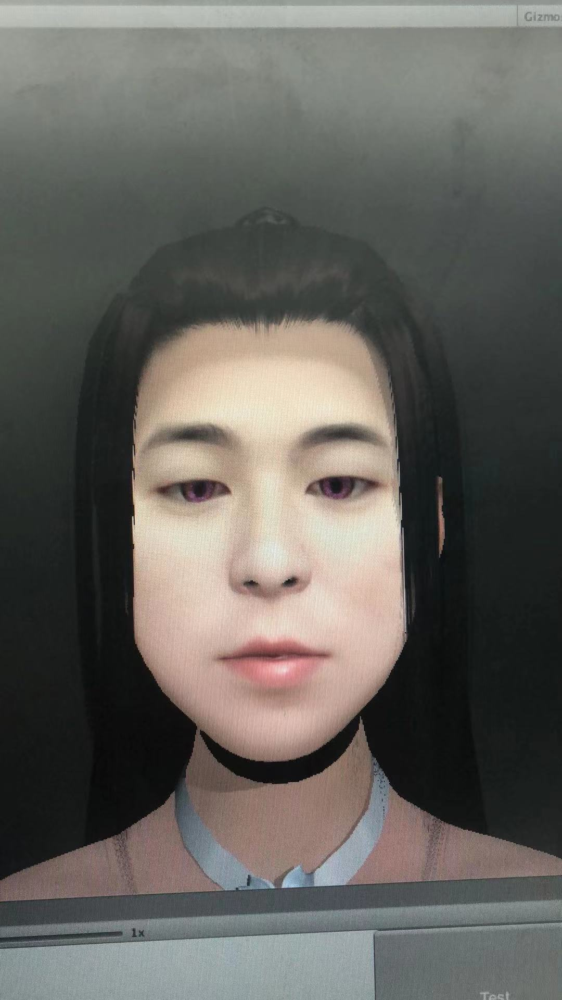
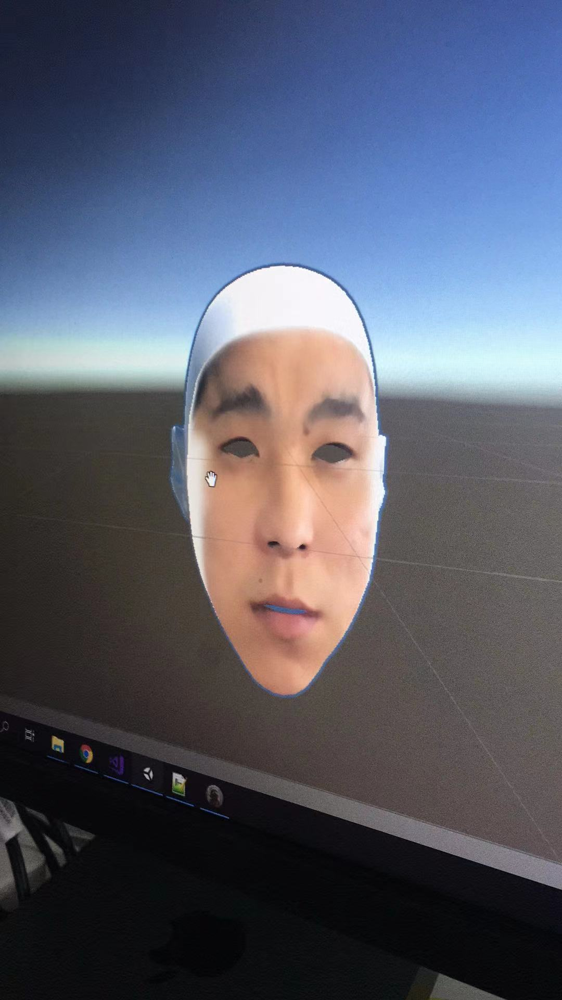
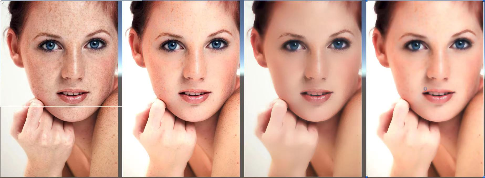
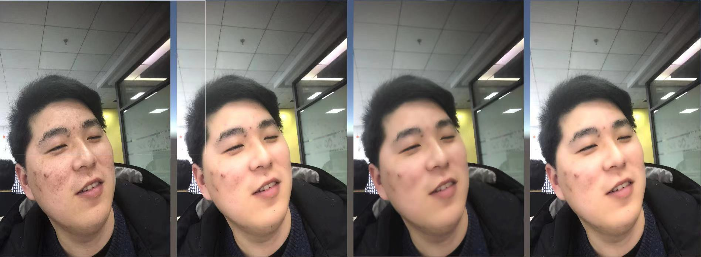
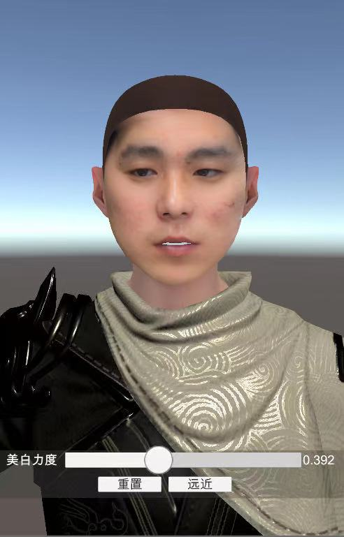
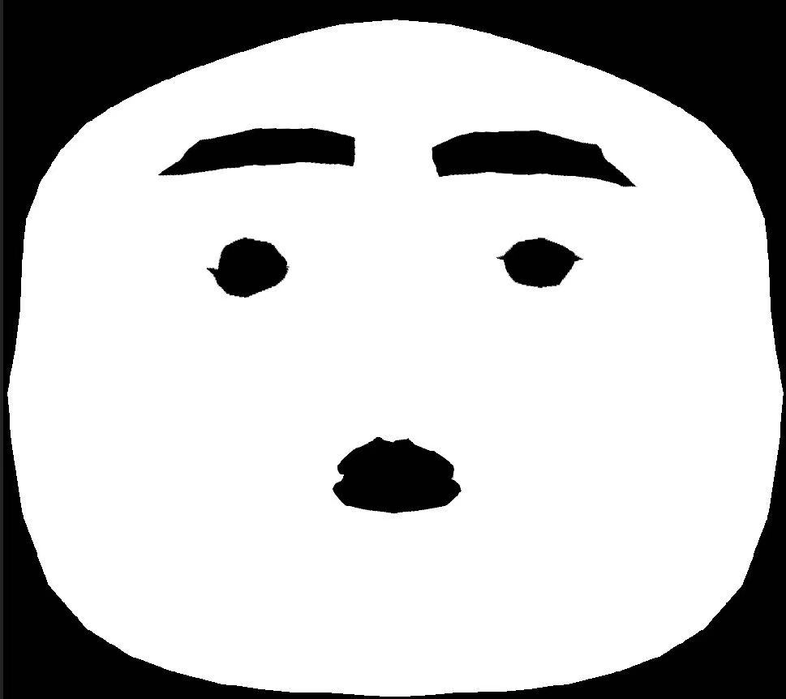
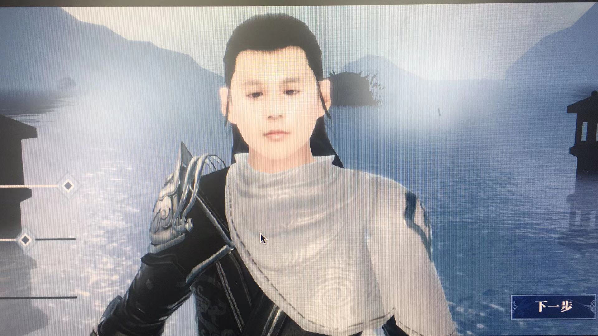
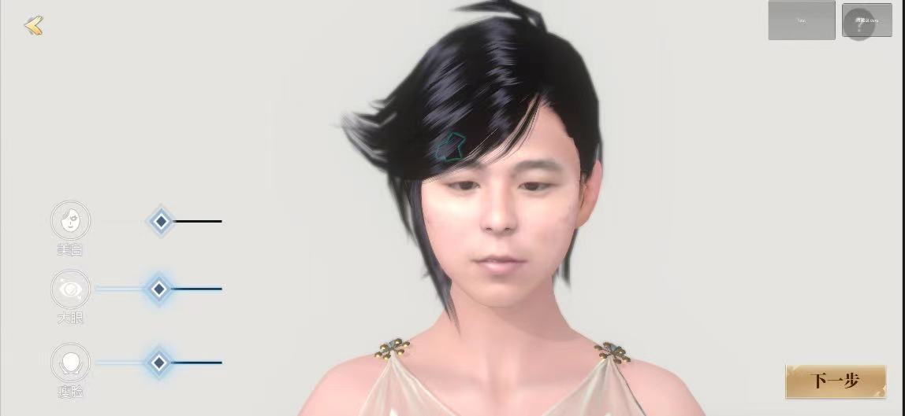
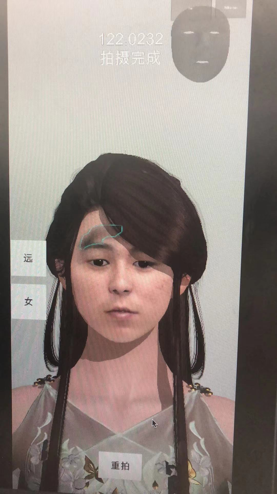

看到这里的一定是真爱了，请我喝杯咖啡☕️怎样？
首先献丑了，这个就是我的头像和我的简历里面一模一样，不是很帅，满脸痘印，头发好久没理了。

但是米哈游说宅男改变世界，于是我变成了下面这个模样，👇🏻

怎么变的呢？有好几个步骤，不方便详说，只能说一下粗略的版本，留个纪念，如果你想做一个自己的产品，欢迎咨询，但是不要骚扰，谢谢。
以下是第一种方案，这种方案已经被公司申请实用性专利了，可以查到的。
第一步是通过ios设备获取人脸的Mesh，这个有接口的，查一下苹果官方文档就可以了，
获取Mesh之后自然是缝合，可以看下图，主要要注意点对点缝合，加面，如果你不懂，可以问问身边的美术朋友。
同时也要获得此时的照片，把UV算好。

上面的模型可以说迈出第一步了，但是还是很挫是不是？脸上的痘印啊，什么的都不行，如果是小姐姐拍了不得把自己吓死？这肯定不行的。所以我们还要正常的美白，磨皮，这里也是有相关文章可以参考的，比如表面模糊，等等，算法也是要优化了，基于O(1)的表面模糊也是要有的。
可以看看10，11，12的图
10

11

12

好的，经过上面的两步之后，还是有明显的问题的，美白力度过大，或产生泛白，就是说，自己本身的关键特征点也被美白掉了，比如眉毛，嘴巴等五官区域，注意，表面模糊化其实是一种保边过滤器，这里说的美白是指提亮颜色值得操作，可以通过HSL中L值来调整，那么怎么解决整体过白或者过黑的问题？ 第三部就是人脸关键点的识别了，市面上的人脸识别的插件大都数都有108的识别，下面放一张特别喜感的图，就是把人脸关键点缝合成面之后的图形。
6

没错，这个图也是本人了，是不是不太像？对了.
这个图和拓扑结构和ios设备获得的mesh的uv的拓扑机构是一样的.
也就是说照片和这个图存在转换关系，具体点就是，模型的1个顶点对应2套uv即可，ios设备的mesh是包含一组拓扑uv，另外一组则是照片的屏幕坐标了，准确的讲是视口坐标，这里可以构造一张lut用来查询。
后面的步骤中美白时候，过滤一下这个Mask就可以了。
当然边缘部分在构造这个图形的时候可以保留一个通道用来融合。
1.换瞳孔也是要用到这张图的。（其中一种方案）
2.给嘴唇上色也是可以用的。
可以看一下下图的效果，虽然皮肤颜色拉爆了，但是眉毛嘴巴基本得以保留。
男

女

当然拍照的时候不能保证用户拍不到头发，这个APP会提示，所以提示脏区也很重要，算法有兴趣的可以来咨询，效果如下

再来欣赏一下
关于光线的部分也是要好好考虑的，这部分很难，可能机器学习是个思路。
关于瞳色的部分，可以考虑用假眼球来实现，但是要注意前脸缝合眼眶处是否有漏洞。也可以考虑贴图替换，但是这个前脸的照片的贴图精度势必要提高，而这个就和ios设备厂商沟通了，因为图片本身就是720p的，眼睛部分占比非常小，不够精细。
还有一种方案在我的网盘里，就不方便公开了，包含后续骨骼捏脸的部分，这种方案应该更好。包含了大多数现在MMORPG手游的捏脸需求。
最后给大家看一下成品
看到这里的一定是真爱了，请我喝杯咖啡☕️怎样？
can u image your head in a unity game?
First of all, I'm showing my ugliness. This is my profile picture which is exactly the same as in my resume. It is not very handsome, with acne marks on my face, and my hair has been out of control for a long time. But Mihoyo the otaku to save the world, so I became like this one below, 👇🏻 How did it change? There are several steps, it is not convenient to elaborate, I can only talk about a rough version, leave a commemorative, if you want to make a product of your own, welcome to consult, but do not harass, thank you.
The following is the first scheme. This scheme has been applied for a utility patent by the company and can be found. The first step is to get the face mesh through the ios device. This one has an interface, just check the official Apple documentation. After obtaining the Mesh, it is naturally stitched. You can see the picture below. The main thing to pay attention to is the point-to-point stitching and adding surface. If you don't understand, you can ask your art friends around you. At the same time, get the photo at this time and calculate the UV.
The above model can be said to have taken the first step, but it is still very frustrating, isn't it? The acne marks on the face, nothing works, if it's the young lady who took a picture, can't you scare yourself to death? This will definitely not work. Therefore, we have to perform normal whitening and dermabrasion. There are also related articles for reference, such as surface blur, etc. The algorithm should also be optimized, and the surface blur based on O(1) is also required.
You can look at the graphs of 10, 11, and 12
10
11
12
Okay, after the above two steps, there are still obvious problems. The whitening power is too large, or whitening occurs, that is, the key features of oneself are also whitened off, such as eyebrows, mouth and other facial features. Note that the surface fuzzification is actually a kind of edge-preserving filter. The whitening mentioned here means that the brightening of the color is worth the operation. It can be adjusted by the L value in the HSL, so how to solve the overall problem of over-white or over-black? The third part is the recognition of the key points of the face. Most of the face recognition plug-ins on the market have 108 recognitions. Below is a particularly happy picture, which is the figure after stitching the key points of the face into a surface. .
That's right, this picture is also my own, isn't it not very similar? correct.
This diagram and topology are the same as the topology of the mesh uv obtained by the ios device.
In other words, there is a conversion relationship between the photo and this graph. The specific point is that one vertex of the model corresponds to two sets of uv. The mesh of the ios device contains a set of topological uv, and the other set is the screen coordinates of the photo, which is accurate It is the viewport coordinates. Here you can construct a lut for query.
When whitening in the following steps, just filter this Mask.
Of course, the edge part can reserve a channel for fusion when constructing this graphic.
Of course, there is no guarantee that the user will not be able to take the hair when taking pictures. This APP will prompt, so the dirty area is also very important. If the algorithm is interested, you can come to consult. The effect is as follows
Let's enjoy it again The part about light should also be considered carefully. This part is difficult. Perhaps machine learning is an idea. Regarding the part of the pupil color, you can consider using fake eyeballs to achieve it, but pay attention to whether there are holes in the eye sockets of the front face. You can also consider texture replacement, but the texture accuracy of the front face photo is bound to be improved, and this is communicated with the ios device manufacturer, because the picture itself is 720p, and the proportion of the eyes is very small and not detailed enough.
There is another solution in my network disk, which is not convenient to disclose, including the part of the subsequent bone pinching face. This solution should be better. Contains most of the current MMORPG mobile game's face pinching needs.
Finally, I will show you the finished product
It must be true love to see here. How about a cup of coffee for me?